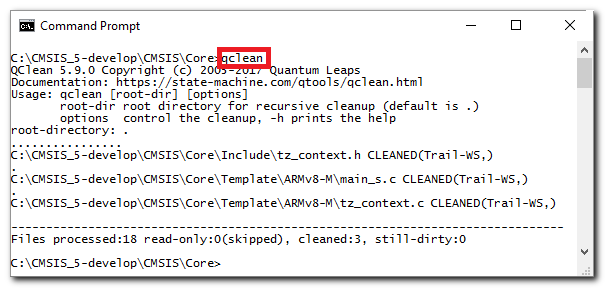

Many programmers pay little attention to the whitespace in their source code, such as spaces, tabs, new-lines, etc. The common thinking is that compilers (C, C++, etc.) ignore whitespace anyway, so why bother? But, as a professional software developer you should not ignore whitespace, because it can cause all sorts of problems, some of them illustrated in the figure below:

Examples of problematic whitespace in source code
-
1 Trailing whitespace after the last printable character in line can cause bugs. For example, trailing whitespace after the C/C++ macro-continuation character '\' can confuse the C pre-processor and can result in a program error, as indicated by the bug icons.
-
2 Similarly, inconsistent use of End-Of-Line (EOL) convention can cause bugs. For example, mixing the DOS EOL Convention (0x0D,0x0A) with Unix EOL Convention (0x0A) can confuse the C pre-processor and can result in a program error, as indicated by the bug icons.
-
3 Inconsistent use of tabs and spaces can cause unnecessary churn in the version control system (VCS) in source files that otherwise should be identical. Also inconsistent use of whitespace can lead to different rendering of the source code by different editors and printers.
- Attention
- The problems caused by whitespace in the source code are particularly insidious, because you don't see the culprit. By using an automated whitespace cleanup utility you can save yourself hours of frustration and significantly improve your code quality.
QClean Source Code Cleanup Utility
QClean is a simple and blazingly fast command-line utility to automatically clean whitespace in your source code. QClean is deployed as natively compiled executable and is located in the sub-directory qtools/bin/. QClean is available in portable source code and can be compiled on all desktop platforms (Windows and POSIX – Linux, macOS...).
- Attention
- QClean is very simple to use (no parameters are needed in most cases) and is blazingly fast (it can easily cleanup hundreds of files per second). All this is designed so that you can use QClean frequently. In fact, the use of QClean after editing your code should become part of your basic hygiene–like washing hands after going to the bathroom.
QClean Usage
Typically, you invoke QClean from a command-line prompt without any parameters. In that case, QClean will cleanup white space in the current directory and recursively in all its sub-directories.
- Note
- If you have added the qtools/bin/ directory to your
PATH environment variable (see Installing QTools), you can run qclean directly from your terminal window.

Example run of the QClean utility
As you can see in the screen shot above, QClean processes the files and prints out the names of the cleaned up files. Also, you get information as to what has been cleaned, for example, "Trail-WS" means that trailing whitespace has been cleaned up. Other possibilities are: "CR" (cleaned up DOS/Windows (CR) end-of-lines), "LF" (cleaned up Unix (LF) end-of-lines), and "Tabs" (replaced Tabs with spaces).
QClean Command-Line Parameters
QClean takes the following command-line parameters:
| PARAMETER | DEFAULT | COMMENT |
[root-dir] | . | root directory to clean (relative or absolute) |
| OPTIONS | | |
-h | | help (show help message and exit) |
-q | | query only (no cleanup when -q present) |
-r | | check also read-only files |
-l[limit] | 80 | line length limit (not checked when -l absent) |
QClean Features
QClean fixes the following whitespace problems:
- removing of all trailing whitespace (see figure above 1)
- applying consistent End-Of-Line convention (either Unix (LF) or DOS (CRLF) see figure above 2)
- replacing Tabs with spaces (untabify, see figure above 2)
- optionally, scan the source code for long lines exceeding the specified limit (
-l option, default 80 characters per line).
- Note
- QClean can optionally check the code for long lines of code that exceed a specified limit (80 characters by default) to reduce the need to either wrap the long lines (which destroys indentation), or the need to scroll the text horizontally. (All GUI usability guidelines universally agree that horizontal scrolling of text is always a bad idea.) In practice, the source code is very often copied-and-pasted and then modified, rather than created from scratch. For this style of editing, it’s very advantageous to see simultaneously and side-by-side both the original and the modified copy. Also, differencing the code is a routinely performed action of any VCS (Version Control System) whenever you check-in or merge the code. Limiting the line length allows to use the horizontal screen real estate much more efficiently for side-by-side-oriented text windows instead of much less convenient and error-prone top-to-bottom differencing.
QClean File Types
QClean applies the following rules for cleaning the whitespace depending on the file types:
| FILE TYPE | END-OF-LINE | TRAILING WS | TABS | LONG-LINES |
.c | Unix (LF) | remove | remove | check |
.h | Unix (LF) | remove | remove | check |
.cpp | Unix (LF) | remove | remove | check |
.hpp | Unix (LF) | remove | remove | check |
.s | Unix (LF) | remove | remove | check |
.asm | Unix (LF) | remove | remove | check |
.lnt | Unix (LF) | remove | remove | check |
.txt | DOS (CR,LF) | remove | remove | don't check |
.md | DOS (CR,LF) | remove | remove | don't check |
.bat | DOS (CR,LF) | remove | remove | don't check |
.ld | Unix (LF) | remove | remove | check |
.py | Unix (LF) | remove | remove | check |
.pyw | Unix (LF) | remove | remove | check |
.tcl | Unix (LF) | remove | remove | check |
.java | Unix (LF) | remove | remove | check |
Makefile | Unix (LF) | remove | leave | check |
.mak | Unix (LF) | remove | leave | check |
.html | Unix (LF) | remove | remove | don't check |
.htm | Unix (LF) | remove | remove | don't check |
.php | Unix (LF) | remove | remove | don't check |
.dox | Unix (LF) | remove | remove | don't check |
.m | Unix (LF) | remove | remove | check |
- Note
- The cleanup rules specified in the table above can be easily customized by editing the array
l_fileTypes in the qclean/source/main.c file. Also, you can change the Tab size by modifying the TAB_SIZE constant (currently set to 4) as well as the default line-limit by modifying the LINE_LIMIT constant (currently set to 80) at the top of the the qclean/source/main.c file. Of course, after any such modification, you need to re-build the QClean executable and copy it into the qtools/bin directory.
- Attention
- For best code portability, QClean enforces the consistent use of the specified End-Of-Line convention (typically Unix (LF)), regardless of the native EOL of the platform. The DOS/Windows EOL convention (CR,LF) is typically not applied because it causes compilation problems on Unix-like systems (Specifically, the C preprocessor doesn't correctly parse the multi-line macros.) On the other hand, most DOS/Windows compilers seem to tolerate the Unix EOL convention without problems.
Next: QFSGen ROM File-System Generator